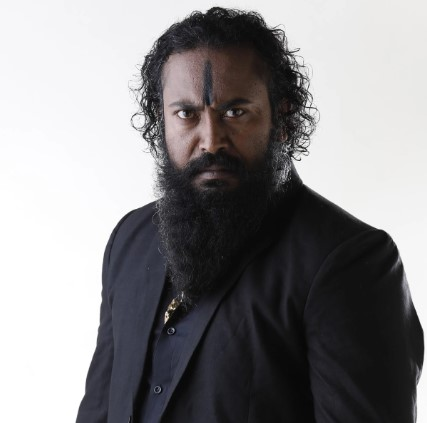
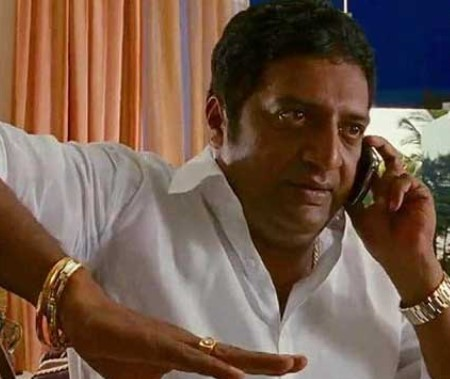

Yash
Rocky is a boy who lived in poverty. Until his mother died, he swore to her to die a powerful and feared man, as such he gained the reputation of being a feared rowdy and gangster working under crime boss Shetty of the Narachi company. He takes pride in murdering rival gang members and is self taught in weapons combat, and is appointed by Andrews to slay the cult's next heir.
Srinidhi Shetty
In KGF: Chapter 1, Srinidhi Shetty plays the role of Reena Desai, the love interest of the protagonist, Rocky. Reena is portrayed as a confident and strong-willed woman who initially misunderstands Rocky’s intentions but eventually develops feelings for him. Her character adds emotional depth to the story, showing a softer side to the otherwise intense narrative.
Garuda
In KGF: Chapter 1, Garuda is the primary antagonist and the son of Suryavardhan, the founder of the Kolar Gold Fields (KGF). Portrayed as a ruthless and authoritarian leader, Garuda exercises complete control over the gold mines with an iron fist. His cruel and oppressive rule instills fear in the workers and the people around him.
Movie-2: SINGHAM

Ajay Devgan
In Singham, Ajay Devgn plays the role of Bajirao Singham, an upright and fearless police officer dedicated to upholding justice. Hailing from a small village, Singham is known for his integrity, strong moral values, and commitment to his duty. He faces off against the corrupt and influential politician Jaikant Shikre, fearlessly confronting corruption and crime.
Kajal Agrawal
In Singham, Kajal Aggarwal plays the role of Kavya Bhosle, the love interest of Bajirao Singham. Kavya is portrayed as a cheerful, supportive, and understanding woman who stands by Singham as he battles against corruption and injustice. She is not just a romantic interest but also plays a vital role in grounding Singham emotionally, offering him encouragement and unwavering support.
Prakash Raj
In Singham, Jaikant Shikre is the main antagonist, portrayed by Prakash Raj. Jaikant is a ruthless and powerful politician with deep-rooted connections to crime and corruption. He is known for his manipulative tactics, arrogance, and complete disregard for the law. Jaikant’s character represents the corruption and misuse of power that Bajirao Singham, the protagonist, fights against.